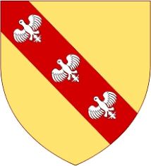

Antavla
196907246344 Count Wigeric of Lotharingla & Bidgau
Greve. Blev högst 36 år.

Far:
Sigebert (de Lothringen) of Verdun (860? - 919)
Mor:
Kunnigunde of Provence (873? - )
Född:
886 Luxenburg.
[1]
Död:
före 923.
[2]
Barn med
196907246345 Comtesse Cunigunda of Trevern & Ardennes (892? - 923?)
Barn:
Godzelin of Ardennes & Bidgau (911 - 943)
Personhistoria
Årtal
Ålder
Händelse
886
Födelse 886 Luxenburg
[1]
<923
Död före 923
[2]
Källor
[1]
comrade28
[2]
Wikipedia